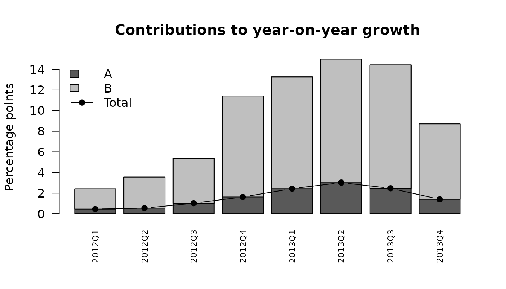

Practical case: from current prices to contributions to growth
Source:vignettes/practical_case.Rmd
practical_case.RmdThis vignette follows a complete workflow, from raw quarterly data to
chain-linked volume series, growth rates and contributions to growth. It
does not require to know the examples of the IMF Quarterly National
Accounts Manual (see the vignette imf_qna_manual
for them).
The data are those of the example 8.2 of the manual: two products,
A and B, with their current prices and their
price indices over the previous year (2010 is the reference year).
1. Prepare the inputs
The functions use ts objects. Raw data usually come as a
table, with one row per quarter:
raw <- data.frame(
year = rep(2010:2013, each = 4),
quarter = rep(1:4, times = 4),
A_cp = as.numeric(imf_cp[, "A"]),
B_cp = as.numeric(imf_cp[, "B"]),
A_pi = as.numeric(imf_pi[, "A"]),
B_pi = as.numeric(imf_pi[, "B"])
)
head(raw, 6)
#> year quarter A_cp B_cp A_pi B_pi
#> 1 2010 1 150.0 225.0 NA NA
#> 2 2010 2 150.0 225.0 NA NA
#> 3 2010 3 150.0 225.0 NA NA
#> 4 2010 4 150.0 225.0 NA NA
#> 5 2011 1 159.7 218.9 102.0 99
#> 6 2011 2 163.2 213.7 102.5 98
raw_ts <- ts(raw[, c("A_cp", "B_cp", "A_pi", "B_pi")],
start = c(raw$year[1], raw$quarter[1]), frequency = 4)
cp <- raw_ts[, c("A_cp", "B_cp")]
price_idx <- raw_ts[, c("A_pi", "B_pi")]
colnames(cp) <- colnames(price_idx) <- c("A", "B")What the functions expect:
-
cp: current prices of the components, without the total. They must cover the reference year (2010 here), whose annual sum gives the level of the chain measures; -
price_idx: price indices over the previous year (average of the previous year = 100). They are not needed in the reference year (here they are missing in 2010).
window(price_idx, end = c(2011, 2))
#> A B
#> 2010 Q1 NA NA
#> 2010 Q2 NA NA
#> 2010 Q3 NA NA
#> 2010 Q4 NA NA
#> 2011 Q1 102.0 99
#> 2011 Q2 102.5 98If the price indices are given over the previous quarter (or month)
instead, the quarter-to-quarter indices of fisher() or
laspeyres() need reference_freq = 4, and
pi_py2pp() converts price indices over the previous year to
indices over the previous quarter.
2. Chain-linked volume series
With the annual overlap technique and 2010 as reference year, the chain-linked Laspeyres-type volume measures (in monetary terms) of the products and of their total are:
x <- chain_laspeyres(cp, price_idx, method = "ao", base_year = 2010,
output = "measure")
round(x, 1)
#> A B Total
#> 2011 Q1 156.6 221.1 377.7
#> 2011 Q2 159.2 218.1 377.3
#> 2011 Q3 162.5 214.9 377.4
#> 2011 Q4 164.8 213.8 378.6
#> 2012 Q1 165.6 213.6 379.4
#> 2012 Q2 172.3 206.5 379.3
#> 2012 Q3 182.2 198.2 381.3
#> 2012 Q4 206.9 176.1 384.8
#> 2013 Q1 214.2 171.4 388.6
#> 2013 Q2 227.0 159.8 390.8
#> 2013 Q3 235.0 151.0 390.7
#> 2013 Q4 238.6 146.6 390.1The last column is the total. Chain volume measures are not additive: the total differs from the sum of the products, except in 2010 and 2011.
chain_discrepancy(x) |> round(2)
#> Qtr1 Qtr2 Qtr3 Qtr4
#> 2011 0.00 0.00 0.00 0.00
#> 2012 -0.17 -0.46 -0.84 -1.81
#> 2013 -3.08 -4.00 -4.63 -4.93The same series as indices (2010 = 100):
idx <- chain_laspeyres(cp, price_idx, method = "ao", base_year = 2010,
output = "index")
round(idx, 2)
#> A B Total
#> 2011 Q1 104.38 98.27 100.71
#> 2011 Q2 106.15 96.92 100.61
#> 2011 Q3 108.35 95.51 100.65
#> 2011 Q4 109.84 95.04 100.96
#> 2012 Q1 110.39 94.94 101.17
#> 2012 Q2 114.88 91.79 101.15
#> 2012 Q3 121.49 88.09 101.67
#> 2012 Q4 137.91 78.25 102.60
#> 2013 Q1 142.77 76.17 103.63
#> 2013 Q2 151.33 71.01 104.20
#> 2013 Q3 156.68 67.13 104.18
#> 2013 Q4 159.09 65.14 104.033. Growth rates and contributions
Growth rates of the total, over the previous quarter and over the same quarter of the previous year:
growth_qoq <- 100 * (x[, "Total"] / stats::lag(x[, "Total"], -1) - 1)
growth_yoy <- 100 * (x[, "Total"] / stats::lag(x[, "Total"], -4) - 1)
round(ts.union(`Quarter-to-quarter` = growth_qoq, `Year-on-year` = growth_yoy), 2)
#> Quarter-to-quarter Year-on-year
#> 2011 Q2 -0.11 NA
#> 2011 Q3 0.04 NA
#> 2011 Q4 0.31 NA
#> 2012 Q1 0.21 0.45
#> 2012 Q2 -0.02 0.54
#> 2012 Q3 0.52 1.02
#> 2012 Q4 0.91 1.63
#> 2013 Q1 1.00 2.43
#> 2013 Q2 0.55 3.02
#> 2013 Q3 -0.02 2.47
#> 2013 Q4 -0.14 1.40Contributions of the products to these growth rates.
chain_contrib() takes the output of
chain_laspeyres() and the current prices of the components;
extra adds the growth of the total and the residual (growth
minus the sum of the contributions):
contrib_qoq <- chain_contrib(x, cp, method = "ao", type = "period",
extra = c("total", "residual"))
contrib_yoy <- chain_contrib(x, cp, method = "ao", type = "yoy",
extra = c("total", "residual"))
round(contrib_qoq, 3)
#> A B Total Residual
#> 2011 Q1 NA NA NA NA
#> 2011 Q2 0.702 -0.808 -0.106 0
#> 2011 Q3 0.876 -0.838 0.038 0
#> 2011 Q4 0.592 -0.281 0.311 0
#> 2012 Q1 0.248 -0.041 0.207 0
#> 2012 Q2 1.817 -1.835 -0.017 0
#> 2012 Q3 2.673 -2.158 0.516 0
#> 2012 Q4 6.615 -5.701 0.913 0
#> 2013 Q1 2.082 -1.077 1.005 0
#> 2013 Q2 3.440 -2.887 0.553 0
#> 2013 Q3 2.136 -2.156 -0.020 0
#> 2013 Q4 0.966 -1.109 -0.143 0
round(contrib_yoy, 3)
#> A B Total Residual
#> 2011 Q1 NA NA NA NA
#> 2011 Q2 NA NA NA NA
#> 2011 Q3 NA NA NA NA
#> 2011 Q4 NA NA NA NA
#> 2012 Q1 2.419 -1.970 0.450 0
#> 2012 Q2 3.548 -3.009 0.539 0
#> 2012 Q3 5.357 -4.338 1.019 0
#> 2012 Q4 11.409 -9.783 1.626 0
#> 2013 Q1 13.261 -10.826 2.435 0
#> 2013 Q2 14.971 -11.951 3.020 0
#> 2013 Q3 14.419 -11.949 2.471 0
#> 2013 Q4 8.707 -7.310 1.398 0The residual is zero if the data are fully consistent. Here it is not exactly zero (the annual price indices of the example are not exactly consistent with the quarterly data) but it is negligible.
4. Chart of the contributions
Contributions of the products (side by side, as they can be negative) and growth of the total (year-on-year):
contrib_plot <- window(contrib_yoy, start = c(2012, 1))
bp <- barplot(t(contrib_plot[, c("A", "B")]), beside = TRUE,
names.arg = paste0(floor(time(contrib_plot)), "Q", cycle(contrib_plot)),
col = c("grey35", "grey75"), las = 2, cex.names = 0.7,
ylim = range(contrib_plot[, c("A", "B", "Total")]) * 1.1,
ylab = "Percentage points",
main = "Contributions to year-on-year growth")
abline(h = 0)
lines(colMeans(bp), contrib_plot[, "Total"], type = "b", pch = 19)
legend("bottomleft", legend = c("A", "B", "Total"),
fill = c("grey35", "grey75", NA), border = c("black", "black", NA),
pch = c(NA, NA, 19), lty = c(NA, NA, 1), bty = "n")
5. Annual series and change of the reference year
Contributions to the growth of the annual sums:
chain_contrib(x, cp, method = "ao", type = "annual", extra = "total") |>
round(3)
#> Time Series:
#> Start = 2011
#> End = 2013
#> Frequency = 1
#> A B Total
#> 2011 2.871 -2.139 0.732
#> 2012 5.687 -4.779 0.909
#> 2013 12.827 -10.499 2.328chain_rebase() changes the reference year (the average
of the new year is 100) without changing the growth rates:
chain_rebase(idx, base_year = 2012) |> round(2)
#> A B Total
#> 2011 Q1 86.14 111.33 99.08
#> 2011 Q2 87.60 109.80 98.98
#> 2011 Q3 89.42 108.20 99.01
#> 2011 Q4 90.65 107.67 99.32
#> 2012 Q1 91.11 107.56 99.53
#> 2012 Q2 94.81 103.99 99.51
#> 2012 Q3 100.26 99.80 100.02
#> 2012 Q4 113.82 88.66 100.94
#> 2013 Q1 117.83 86.29 101.95
#> 2013 Q2 124.89 80.44 102.52
#> 2013 Q3 129.30 76.05 102.49
#> 2013 Q4 131.30 73.79 102.35The contributions must be computed from the measures built with their original reference year (here 2010), before rebasing.
6. One-quarter overlap and benchmarking
With the one-quarter overlap technique, the quarterly series are
linked on the last quarter of the year, so that the annual sums of the
chain volume measures differ from those of the annual chain series
(annual overlap). They can be benchmarked on them with the
tempdisagg package (Denton, Cholette’s variant), as in the
vignette imf_qna_manual.
x_oqo <- chain_laspeyres(cp, price_idx, method = "oqo", base_year = 2010,
output = "measure")
contrib_oqo <- chain_contrib(x_oqo, cp, method = "oqo", type = "yoy", pi = price_idx,
extra = c("total", "residual"))
round(contrib_oqo, 3)
#> A B Total Residual
#> 2011 Q1 NA NA NA NA
#> 2011 Q2 NA NA NA NA
#> 2011 Q3 NA NA NA NA
#> 2011 Q4 NA NA NA NA
#> 2012 Q1 2.397 -1.986 0.410 0
#> 2012 Q2 3.524 -3.025 0.499 0
#> 2012 Q3 5.333 -4.353 0.979 0
#> 2012 Q4 11.382 -9.796 1.586 0
#> 2013 Q1 13.147 -10.928 2.219 0
#> 2013 Q2 14.849 -12.047 2.803 0
#> 2013 Q3 14.294 -12.039 2.255 0
#> 2013 Q4 8.581 -7.397 1.184 0
annual_ao <- aggregate(x[, "Total"], FUN = sum)
x_oqo_total <- x_oqo[, "Total"]
bench <- tempdisagg::td(annual_ao ~ 0 + x_oqo_total,
conversion = "sum", method = "denton-cholette")
x_oqo_bench <- predict(bench)
ts.union(`One-quarter overlap` = x_oqo_total,
`Benchmarked` = x_oqo_bench) |> round(1)
#> One-quarter overlap Benchmarked
#> 2011 Q1 377.7 377.7
#> 2011 Q2 377.3 377.3
#> 2011 Q3 377.4 377.4
#> 2011 Q4 378.6 378.6
#> 2012 Q1 379.2 379.2
#> 2012 Q2 379.2 379.2
#> 2012 Q3 381.1 381.3
#> 2012 Q4 384.6 385.0
#> 2013 Q1 387.6 388.4
#> 2013 Q2 389.8 390.7
#> 2013 Q3 389.7 390.8
#> 2013 Q4 389.2 390.3The contributions above are those of the non-benchmarked one-quarter
overlap series: benchmarking the total alone breaks the link between the
total and its components, so the contributions of the benchmarked series
are not available through chain_contrib().
7. Seasonal adjustment of chain-linked series
Chain-linked volume series are often seasonally adjusted. The ESS Guidelines on Seasonal Adjustment (item 5.6) describe how to derive the seasonally adjusted aggregate of annually chain-linked Laspeyres-type components indirectly, that is by aggregating the seasonally adjusted components:
- seasonally adjust the chain volume measures of the components;
- un-chain them (
chain_unchain()): the volume at the prices of the previous year is additive within each year; - aggregate them and derive the volume index of the aggregate over the previous year;
- chain-link it again, with the same technique, and re-reference it to the reference year (the annual current prices of the reference year are those of the unadjusted data).
Here the seasonal adjustment is an illustration with
stats::stl() (the data of the example only have 12 quarters
and no real seasonality, so that the adjustment is not meaningful in
itself):
sa_stl <- function(s) {
fit <- stats::stl(s, s.window = "periodic")
fit$time.series[, "trend"] + fit$time.series[, "remainder"]
}
# Step 1: seasonally adjusted chain volume measures of the components
x_sa <- ts.union(A = sa_stl(x[, "A"]), B = sa_stl(x[, "B"]))
round(x_sa, 1)
#> A B
#> 2011 Q1 160.3 217.0
#> 2011 Q2 160.3 217.0
#> 2011 Q3 162.0 215.7
#> 2011 Q4 160.5 218.2
#> 2012 Q1 169.3 209.5
#> 2012 Q2 173.4 205.4
#> 2012 Q3 181.7 199.0
#> 2012 Q4 202.6 180.4
#> 2013 Q1 217.9 167.3
#> 2013 Q2 228.1 158.7
#> 2013 Q3 234.5 151.9
#> 2013 Q4 234.4 150.9Step 2: un-chained components, i.e. volumes at the prices of the previous year, that can be summed:
x_sa_py <- chain_unchain(x_sa, cp, base_year = 2010)
round(x_sa_py, 1)
#> A B
#> 2011 Q1 160.3 217.0
#> 2011 Q2 160.3 217.0
#> 2011 Q3 162.0 215.7
#> 2011 Q4 160.5 218.2
#> 2012 Q1 173.8 206.4
#> 2012 Q2 178.0 202.4
#> 2012 Q3 186.5 196.0
#> 2012 Q4 207.9 177.7
#> 2013 Q1 227.5 162.1
#> 2013 Q2 238.1 153.7
#> 2013 Q3 244.8 147.1
#> 2013 Q4 244.7 146.2Step 3: the sum of the components is the volume of the aggregate at the prices of the previous year. Divided by the current prices of the previous year (per quarter), it gives the volume index of the aggregate over the previous year, which is chain-linked with the annual overlap technique:
cp_total <- cp[, "A"] + cp[, "B"]
# annual current prices of the previous year, per quarter
cp_total_py <- stats::lag(ts(rep(aggregate(cp_total), each = 4),
start = c(2010, 1), frequency = 4), -4) / 4
vo_sa <- 100 * (x_sa_py[, "A"] + x_sa_py[, "B"]) / cp_total_pyStep 4: the chain volume measure of the aggregate, with 2010 as reference year (its annual current prices are those of the unadjusted data):
indirect <- chain_link(vo_sa, cp_total, method = "ao", base_year = 2010,
output = "measure")Equivalently, the steps 2 to 4 can be done with
chain_aggregate():
indirect2 <- chain_aggregate(x_sa, cp, base_year = 2010, output = "measure")
all.equal(indirect, indirect2)
#> [1] TRUEThe indirectly seasonally adjusted aggregate, compared to the direct adjustment of the aggregate and to the unadjusted data:
direct <- sa_stl(x[, "Total"])
sa <- ts.union(Unadjusted = x[, "Total"], `SA direct` = direct,
`SA indirect` = indirect)
round(sa, 1)
#> Unadjusted SA direct SA indirect
#> 2011 Q1 377.7 377.4 377.3
#> 2011 Q2 377.3 377.3 377.3
#> 2011 Q3 377.4 377.7 377.7
#> 2011 Q4 378.6 378.7 378.7
#> 2012 Q1 379.4 379.1 379.2
#> 2012 Q2 379.3 379.3 379.4
#> 2012 Q3 381.3 381.5 381.5
#> 2012 Q4 384.8 384.8 384.6
#> 2013 Q1 388.6 388.3 388.6
#> 2013 Q2 390.8 390.7 390.9
#> 2013 Q3 390.7 390.9 390.9
#> 2013 Q4 390.1 390.2 389.9The two approaches give different seasonally adjusted aggregates. The annual totals of the seasonally adjusted series are not forced to be those of the unadjusted data:
aggregate(sa, FUN = sum) |> round(1)
#> Time Series:
#> Start = 2011
#> End = 2013
#> Frequency = 1
#> Unadjusted SA direct SA indirect
#> 2011 1511.0 1511.0 1511.0
#> 2012 1524.7 1524.7 1524.7
#> 2013 1560.2 1560.2 1560.2If users require it and if the unadjusted data are additive, the
guidelines suggest forcing the annual totals (for instance with the
Denton method of the tempdisagg package, as in the vignette
on the manual). The indirect approach only exists for Laspeyres-type
series: for the other chain-linked indices, only the direct approach is
feasible. With the one-quarter overlap technique, use
method = "oqo" and the price indices pi (the
overlap quarter is valued at the average prices of the year).
References
Eurostat (2015), ESS Guidelines on Seasonal Adjustment (2015 Edition), Luxembourg, Publications Office of the European Union. doi:10.2785/317290.
International Monetary Fund (2018), Quarterly National Accounts Manual (2017 Edition), Washington, DC. doi:10.5089/9781475589870.069.